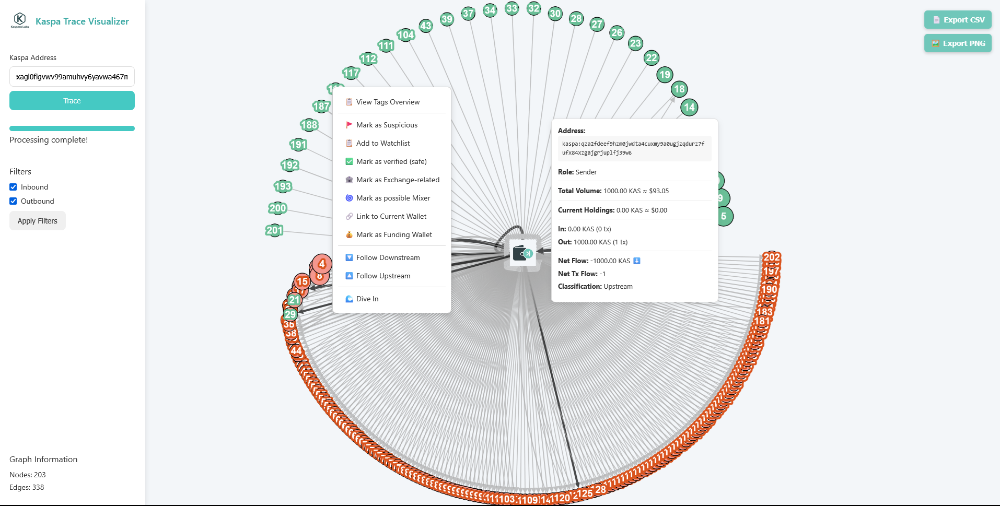

Kaspa Radar — Watch Transaction Patterns & Track Wallet Activity



Kaspero Labs is focused on real-world adoption - building tools that people will actually need in a functional, crypto-based financial system. We're here to make Kaspa practical, approachable, and part of everyday life.
We are actively seeking collaborations with like-minded individuals and teams who share our passion for advancing the Kaspa ecosystem. If you're building in this space, let's connect and explore possibilities together.
kasperolabs@gmail.com